- FastAPI
- Python
- LangChain
- DeepSeek
- Milvus
- Vue 3
编排与基础设施：LangGraph（状态图与人工中断）· Redis 8（队列、检查点、任务事件、分布式租约）· Celery（长任务执行与 Outbox 补派发）
RAG 链路：六个阶段做准确率工程
制度类问答的准确率不只取决于模型参数 —— 采样温度、提示词都会影响输出；但真正决定上限的是 证据取得准不准。所以这条链路被拆成解析、切片、改写、召回、重排与生成六段。
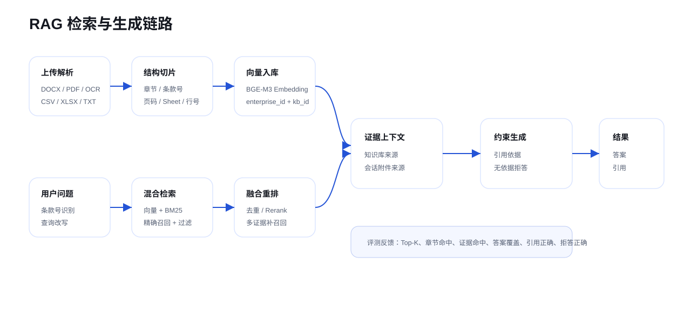
知识问答架构：应用编排与可选工具接口
制度问答要求引用可追溯，就不该让模型自己决定检不检索；而涉及工具与外部能力时，固定流程又不够用。 本系统的做法是：前者写死成流程，后者单独开分支，两条互不干扰。
主链路：应用控制的 RAG Workflow
用户提问后先准备：取该企业的模型 Key、取当前企业的有效文档白名单、提取用户档案、 把更早的历史压成摘要、检索当前会话的附件。 接着进入检索阶段：改写与模型判断后的子问题拆分 → 批量向量化及搜索 → 授权文档范围内的向量与 BM25 双路召回 → 归一化加权融合与规则处理 → cross-encoder 精排、融合候选保底与独立证据门控。 最后是生成与落库：命中知识库就按引用溯源回答、没命中就说明知识库未覆盖； 回答流式推送并附上引用来源，问答与来源一并落库。
这些阶段由应用编排，模型参与理解和生成，但不自由决定整条网页处理流程；是否有候选、附件或需要摘要仍有条件分支，输出也不保证逐次完全一致。 用户档案的抽取也在这条流程里：用结构化输出把姓名、称呼、身份、偏好抽成字段落库，每轮注入。 抽取调用由触发词预筛控制，字段内容仍由模型理解后返回；取用与保存的范围由服务端决定。
Agent 分支：工具接入能力的验证
固定流程之外另做了两条挂工具的 Agent，验证「模型自主决定调哪个工具」这条路线。 一条提供知识库检索、当前时间和用户档案三个工具定义，由模型选择调用；检索复用部分混合召回组件，未完全采用网页主链路。档案工具为占位说明，真实档案由服务端注入提示词； 另一条把计算器与日期能力放到独立进程，通过 MCP 协议接入，验证「工具即服务」的松耦合方式。
这两条各是独立的实现与接口，没有接进前端的问答入口，作为工具接入能力的验证保留 —— 制度问答的结果要可复现，让模型自主决定检索步骤会让来源不可预测，所以主链路固定不动。 真正接进产品的那条 Agent 链路在后面「合规执行」一节：它自主规划制度检索，判定与审批则交给确定性规则和人。
上下文管理：会话历史、知识与结构化画像
对话历史是证据，结构化状态才是结论。本系统按信息类型选择存储介质，结构化字段走关系库精确查， 非结构化知识走向量库做语义检索。
上下文工程：装配顺序决定回答质量
默认问答按信息类型组织提示词和历史；是否注入还取决于本次检索、历史和档案。以下是内容分区，不代表越靠前的普通文本天然拥有更高指令权限：
- 系统指令身份、边界与硬规则（身份信息依据档案、制度细节无依据说明未知、文档冲突并列引用）；授权身份与数据范围另由服务端校验
- 更早对话摘要只在更早的历史被压缩过时才出现
- 最近 2 条消息原文保留语气与细节
- 会话附件仅当前会话上传过附件、且有片段命中时才注入
- 用户档案结构化实体记忆；没有记录时显式写「无记录」，压缩编造空间
- 当前日期时间模型不知道「现在」，日期与星期类问题靠它
- 已知信息检索到的知识库证据，每条带 [n] 编号与出处（文件名 · 知识库）
- 用户问题放在最后，紧邻要回答的任务
两条来源分区注入：会话附件与知识库证据各成一块，冲突时要求并列说明差异，不合并成确定结论。 附件只属于当前账号当前会话，换个会话就看不到；知识库证据始终按企业与知识库过滤， 不同租户之间互不可见。
合规执行：Agent 自主检索，判定交给确定性护栏
这份申请该依据哪些制度角度，穷举不出来 —— 该查金额档位还是供应商准入，取决于申请内容本身， 所以这一步交给 Agent 自己规划：查什么、查几次都由它现场决定。 而「谁能批、能不能批、写不写库」必须可复现、可追责，这几步由确定性规则、独立复核与人工审批接管 —— 让 Agent 做它擅长的探索，把不能出错的判定牢牢钉住。
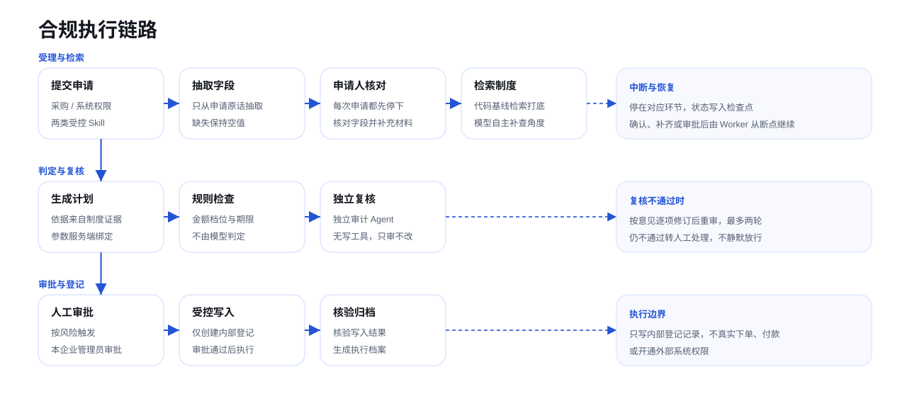
编排与可靠性：中断、恢复与幂等
这条链路是跨进程跑完的：LangGraph 负责状态图与人工中断，Redis 保存检查点、任务事件与分布式租约， Celery Worker 执行长任务、Beat 负责补派发。需要申请人确认或管理员审批时，流程在这里真正挂起； Worker 重启后从检查点继续，不必重跑已完成的环节。
写入侧用三道约束防止重复：任务创建与恢复意图同事务落 Outbox（派发失败由 Beat 补投递）， 执行前先取分布式租约，写入时再叠加SQL 唯一幂等键与状态机校验 —— 重复审批、重复投递或恢复都不会产生第二条业务记录。
界面导览
从登录、问答、附件理解，到知识库治理、模型配置、评测中心与合规执行，均为真实系统界面。
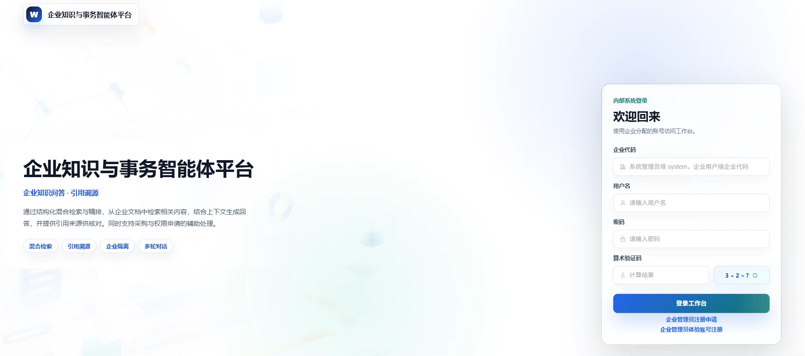
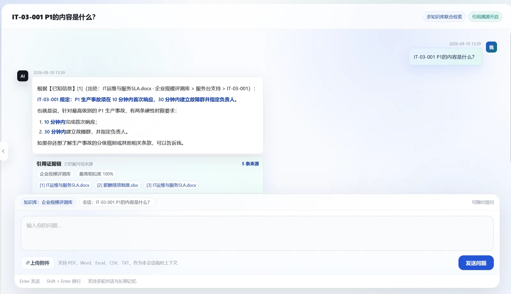
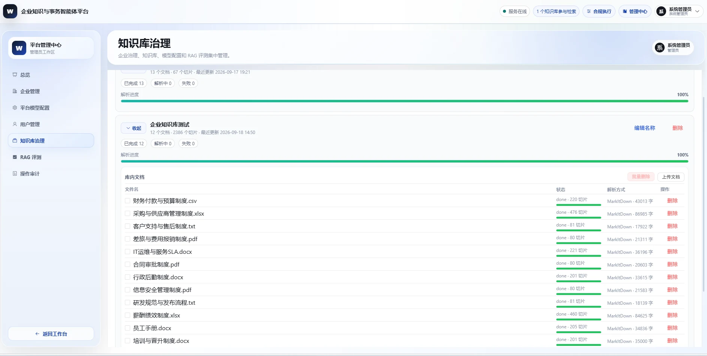
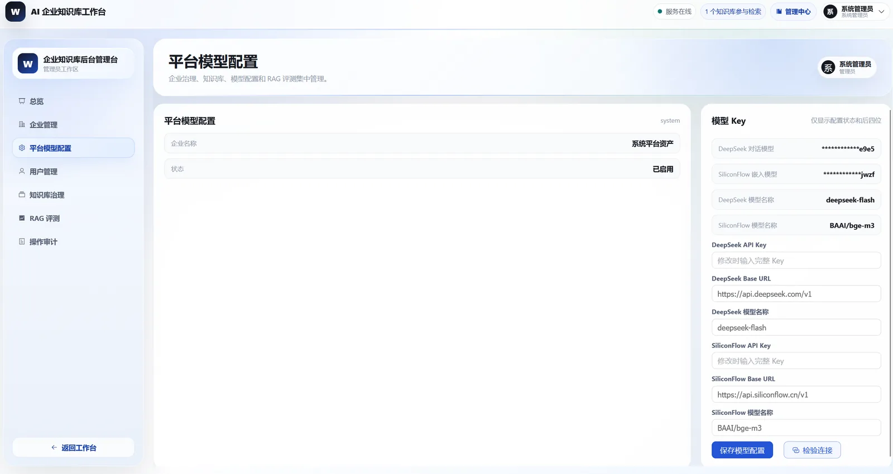
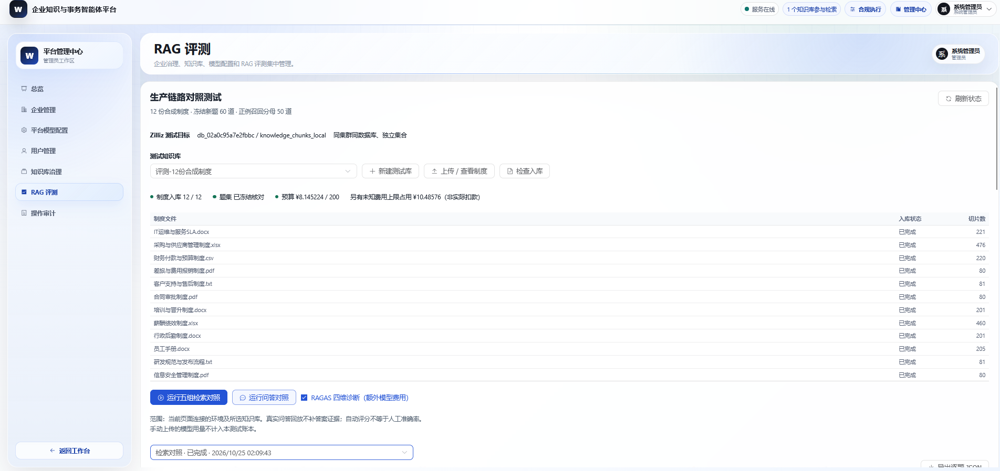
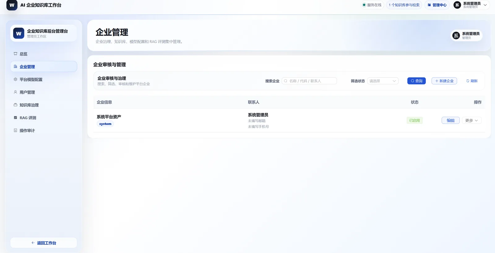
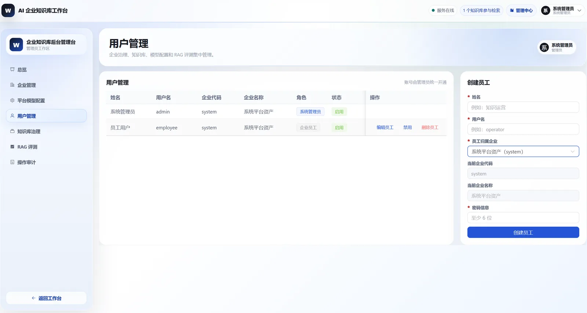
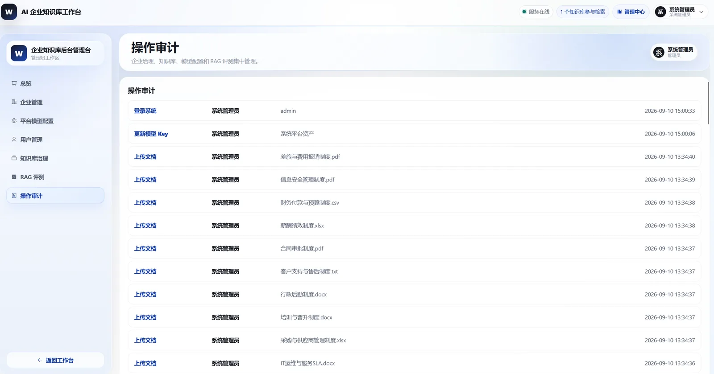
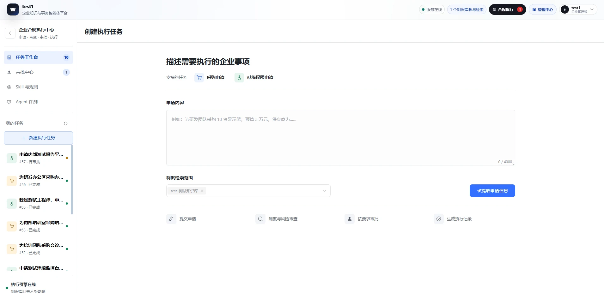
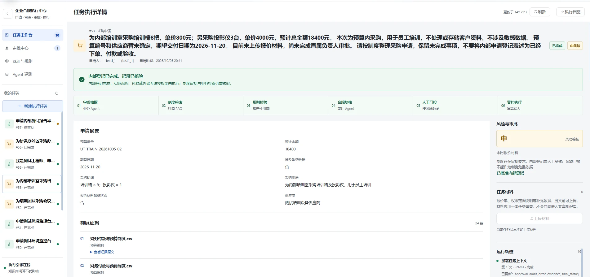
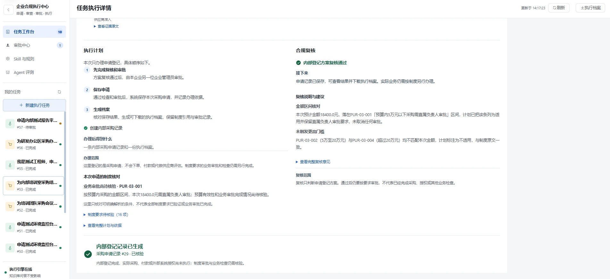
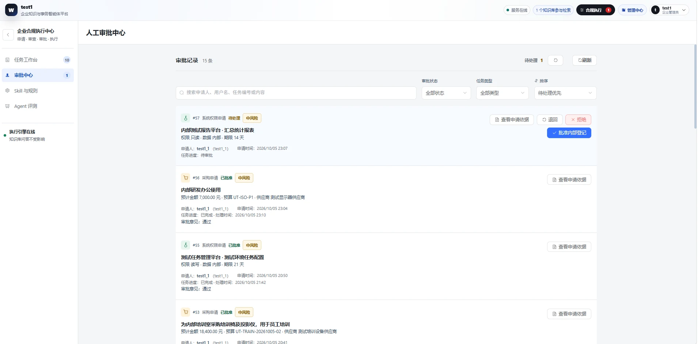
评测与效果验证：以消融对照验证优化贡献
围绕12份合成企业制度，覆盖事实检索、细节解释、跨文档关联、场景计算、边界判断和信息不足六类场景。结合五组检索消融、网页服务回放与RAGAS诊断，验证检索与回答质量。
360题网页主评测：真实回答与独立判分
默认网页问答服务真实检索并流式生成，保存原回答与来源后，由独立LLM-as-Judge从正确性、完整性、证据支持、引用支持、拒答适当性五维评分，再校验引用编号及可检查的显式算式。生成端不接收标准答案或必需引用，不按标注补证据。
信息不足专项通过率达91.67%，验证缺乏实际业务记录时的合理拒答与边界说明；结果仅对应信息不足场景。
固定口径，保留逐题证据
题集包含定位提示与自然提问，来源经AI核对。主评测采用固定分母，保留技术失败与逐题归因，覆盖后端服务单轮回放。RAGAS另从忠实度、事实正确性、回答相关性、上下文召回四维诊断质量。
提升均为同域合成制度实验中的相对增幅，各自使用表述中的对照基线；查询增强与精排来自同批消融，忠实度来自另一批问答对照。自动裁判结果不等同于人工准确率或线上用户成绩。截图用于功能演示，指标口径以本节为准。